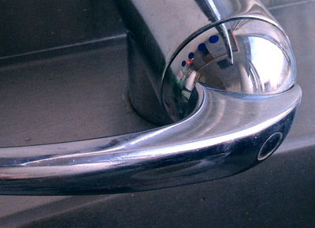
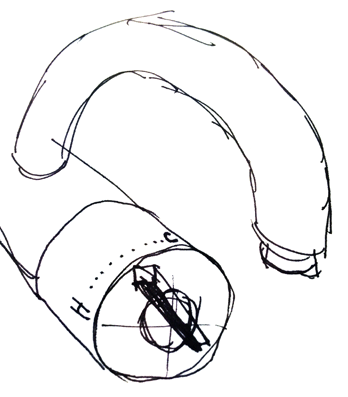

I’ve had it with the office’s kitchen sink. Now, I’m no User Experience expert or product designer, but I can certainly spot a poorly designed object when I use one. Even more so when the object is so poorly designed that I can’t understand it and continue to use it improperly even after learning!
In our current office space the kitchen sink’s faucet has got to be the worst design I have ever come across.
Donald Norman wrote a book about badly designed objects called “The Design of Everyday Things”. In it he discusses affordances and how lousy we are at getting the design of a simple door right. Pull handles when you are meant to push, etc. These are affectionately called “Norman doors” after him. This sink could easily be the quintessential “norman sink” it is that bad.
Firstly, let’s look at the layout of the components. It is an incredibly simple design to have gotten so wrong. There is a neck where the water comes out. You can grab the neck and swivel it around. We understand the affordances. So far so good. Next we have a leaver which controls both the flow and the temperature of the water. Again, we’ve minimised the choices as well as made it pretty obvious what to grab and what can be manipulated. Now comes the bad news… the layout.
You have to reach under the neck where the water comes out to grab the controls to turn the water on. In doing so, you instantly get your arms wet because they are in the way. To turn it off, you have to reach through or around the stream of water to get to the controls. Who thought this design was a good idea? Looking closely, I almost wonder if it was installed incorrectly.
If that wasn’t bad enough, the control to adjust the temperature have labels which are completely counter intuitive and poorly explained. As you rotate the handle the indicators of hot or cold also rotate. This means as you turn the handle anti-clock-wise the ‘blue’ dots (which I assume is meant to symbolise cold, but tell that to color blind people) rotate to the 12 o’clock position and force the ‘red’ dots to rotate to the 6 o’clock position. You’d assume that now that the ‘blue’ dots are showing this would mean the water would be cold. Nope! You turn the handle toward the hot ‘red’ dots, so that means you wanted hot water. This goes against intuition. As you inspect the current state of the system, all you can see is that water is running and the color blue is at the top most prominent position. You would naturally think it should be cold water. The converse is true as you rotate the control clock-wise until the blue dots are at the 6 o’clock position and the red dots are at the 12 o’clock position. That means cold water!
Every time I am forced to use this sink I either get the temperature wrong and/or get wet trying to use it. It is a masterful creation of not-thinking nor designing. Now the original industrial designer might throw their hands up and say that the plumber installed the hot and cold water pipes incorrectly. While that might be true, the design should never have allowed for that confusion in the first place! A well design, or simply labeled, product should not be installed incorrectly. Text saying HOT and COLD on the internal parts of the faucet should have been present and prevented the incorrect installation. Having that text out of view would not have taken away from the astectic of the faucet.
There are several other simple labels and rearrangements that could have been changed to avoid this kerfuffle. The simplest solution could be to swap the colors (or the pipes) so the visual state of the system at any given time represents what is happening.
If this were a complete redesign, then rather than the temperature indicators also rotating with the control, they should have been encoded onto the faucet portion that does not rotate. Then as the leaver control is moved from right to left to change the temperature it is acting as a pointer to the desired outcome; hot or cold. We’ve all seen a better sink design and can imaging how to improve on this layout without having to try too hard.
As for having to reach through the stream of water to adjust the controls, that needs a complete rethinking of the design. Looking closely, I keep thinking it was installed backwards. Given how the pipes representing the temperatures are mixed-up, this might have been a DIY job or some frankenstein faucet of various parts.
Whenever you use a device and don’t understand it, you should never blame yourself for being stupid. It is the designers job to either make the interactions as understandable as possible or explain clearly what needs to occur. If you can’t figure it out, then they didn’t do a good enough job teaching.
As for this sink, I refuse to blame myself for getting wet. It is a train wreck of bad design, engineering and installation.